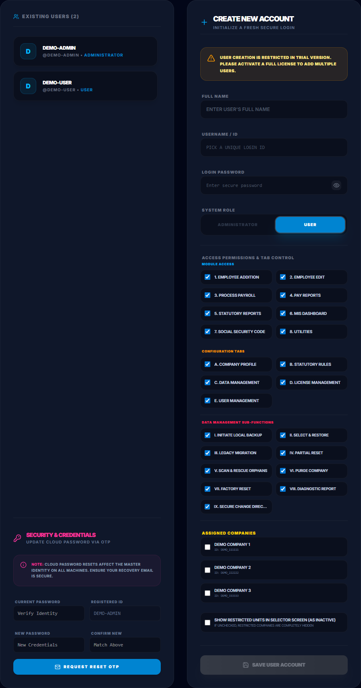
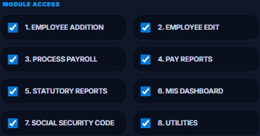
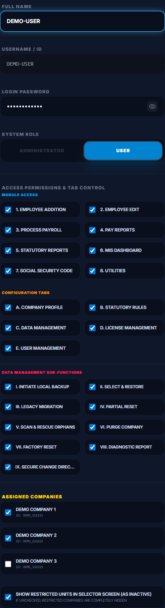
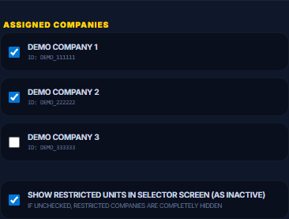

Comprehensive User Manual • V06
Welcome to BharatPay Pro, a premium Payroll Management System designed for precision, security, and ease of use. This manual will guide you through every aspect of the software, including the advanced Multi-Company & Multi-Financial Year Architecture introduced in the V06 series.
1. Getting Started
1.1 First-Time Installation & Data Folder Selection
When deploying BharatPay Pro for the first time, the system will initialize your environment.
- Data Folder Selection (CRITICAL): Upon the very first launch, the application will prompt you to select a master directory to store your database and generated reports.
- Avoid the C:\ Drive: Do NOT select a folder inside your primary
C:\drive or system directories (such asProgram Files,Documents, orDesktop). If your operating system crashes, gets formatted, or undergoes a Windows system recovery, you risk losing your database permanently. - Recommended Paths: We highly recommend creating a dedicated folder on a secure, regularly backed-up drive, such as
D:\BharatPayDataorE:\PayrollDB.
- Avoid the C:\ Drive: Do NOT select a folder inside your primary
- Grant Permissions: If Windows Firewall or Anti-Virus prompts you, click "Allow" to ensure the local database and update services can run smoothly.
- Registration: New users must click "Register Now".
- Identity Verification: Enter the OTP sent to your registered Email/Mobile to proceed.
- Set Password: Create a strong Administrator Password. This is tied to your hardware; do not lose it.
1.2 Daily Sync & Security
- Internet Synchronization & 3-Day Lockout Policy:
- The system requires an active internet connection to securely verify license credentials and refresh cloud validation tokens.
- Important (3-Day Limit): You can operate offline for up to 2 days. However, if the application remains offline for **3 consecutive days (72 hours)**, access will be locked automatically for security. You must connect to the internet to restore immediate access.
- Resolving License Conflicts: If the application shows a license mismatch, trial warning, or conflict on startup, navigate to License Management from the settings menu and click **"Sync"**. This forces an instant, secure synchronization with the cloud database to repair and align your local license status.
- Idle Timeout: For security, the app will automatically log you out after 9 minutes of inactivity.
2. Multi-Organization Management
BharatPay Pro V06 supports managed multiple establishments or independent companies within a single installation. Each unit operates in its own **Data Silo** for total isolation.
2.1 The Organization Selector & Creating a New Company
If you have multiple organizations registered, the system will present the Organization Selector immediately after login. Select the unit you wish to work on for the current session.

How to Create a New Company Silo:
To register a brand new organization under your installation:
- On the Organization Selection screen, click the "Add New Establishment" button in the top right.
- A sleek registration form modal will appear:

- Provide Details:
- Establishment Name: Enter the exact registered name (e.g.,
DEMO COMPANY 1). The application strictly converts the establishment name to all capital letters automatically to ensure consistency and compliance. - PAN & Statutory Codes: Enter your establishment's PAN, EPF Code, and ESI Code.
- Automated Path Allocation: The system is designed for maximum simplicity. The user is never prompted to define raw database directory paths. The application strictly and securely handles database routing behind the scenes, automatically nesting the isolated sqlite data structure inside the application's root directory.
- Establishment Name: Enter the exact registered name (e.g.,
- Click "Initialize Silo". The system will instantly provision a brand new, fully isolated directory and database structure specifically for this company.
2.2 Adding & Switching Units
While working within the Dashboard, you can quickly jump between independent establishments or register a new company silo dynamically:

- Add New Unit: Use the "Add New Company" button directly in the switcher panel to register an additional establishment silo.
- Live Switching: Click the active organization name in the top header to reveal the live selection dropdown, and click the target unit (e.g.,
DEMO COMPANY 2orDEMO COMPANY 1) to immediately load its data context.
2.4 Unique Company Signatures, License Integrity & Data Portability Policy
BharatPay Pro V06 enforces advanced license security and cross-user portability features through **Unique Company Signatures**:
USIG-[USERNAME]_[COMPANY_ID]-[HASH]) which is registered and validated online against the master license registry.
To activate a Read-Only company into Full Mode when the slot limit is reached:
- Option A (License Upgrade): Purchase additional company slots to expand your active limit.
- Option B (Dismount & Developer Approval): Dismount/purge an existing active company, then send an email request to the Developer to drop that specific company. Once approved by the Developer, a slot is vacated to convert a Read-Only company to Full Mode.
Portability Benefit: This allows seamless data portability between registered BharatPay Pro users. You can receive, view, audit, and generate statutory reports for data silos or company backups created by another registered
BPP_APP user without consuming active license slots or compromising data integrity.
2.3 Multi-Financial Year Architecture
V05 introduces a robust Multi-Financial Year engine, allowing you to maintain historical data seamlessly without creating multiple files.

- Automated Rollover: Transitioning from March to April automatically calculates carry-forward balances (like Leave and Advances) and seamlessly injects them into the new Financial Year.
- Silo Isolation: Navigating to a month outside the active Financial Year will trigger a strict visual data lock to prevent accidental cross-year corruption.
- Dynamic Dropdown: Use the top-right Financial Year selector to instantly switch your active context between historical years.
3. Statutory Compliance & Settings Portal
BharatPay Pro V06 consolidates all administrative setups under the Settings Portal. Configuring these options accurately is critical, as they form the operational foundation for all wage calculations, security boundaries, and licensing rules.
3.1 The Four Essential Configuration Tabs
- 1. Company Profile (Establishment Master Identity)
The first step in setting up a company silo is populating the core business credentials:- Operational Fields: Enter exact registered Name, Corporate Address, PAN, GST, EPF Registration Number, and ESIC Code.
- Mandatory Field Locking: Fields marked with a red asterisk (
*), including Allocated Data Size, are strictly mandatory. Core features like the Employee Master and Payroll Processor will remain securely locked until these fields are completed and saved. - Formatting Compliance: The system converts the Company Name to ALL CAPITAL LETTERS automatically to ensure compliance with banking and statutory portal formats.
- Downstream Impact: These credentials are dynamically injected into bank-upload statements, monthly EPF ECR headers, ESI portal returns, and are printed at the header of all payslips and Dynamic Pay Sheets.
- 2. Statutory Configuration (The Payroll Calculation Engine)
This tab acts as the primary calculation controller for the entire system, defining statutory ceilings, tax slabs, and optional policy modules.
Critical Payroll Impact: Statutory configuration defines the mathematical rules of the salary calculator. Any error here immediately impacts net pay calculations and compliance audits:- EPF Calculations: Select between "Wages Ceiling Limit" (capping contributions strictly at the statutory INR 15,000 ceiling, where employee/employer contributions are capped at INR 1,800) or "Actual Wages" (calculating full contributions on the actual Basic salary). Choosing the wrong option changes your company's contribution liabilities.
- ESI Coverage Slabs: Configures the statutory contribution ceiling (current limit of Gross Salary <= INR 21,000, calculating Employer 3.25% and Employee 0.75% shares). Employees crossing this gross ceiling are automatically flagged as exempt.
- Professional Tax (PT) & LWF Slab Rules: Configures PT deduction intervals (monthly, half-yearly) and coordinates the dynamic, state-specific PT slabs and LWF cycles based on local labor laws.
- Policy Modules (Enable/Disable): Administrators can dynamically enable or disable Overtime (OT), Retroactive Salary Arrears, and Bonus calculation modules to customize their dashboard.
- 3. License Management (Entitlements & Hardware Lock)
Displays active product keys, registration details, allowed company silos, and license expiration periods.- License Company Limit: Your license dictates the maximum number of independent companies (Data Silos) you can create. Once this limit is reached, you cannot register new companies. If an active company folder is moved to another machine that has exhausted its limit, it will open in Read-Only Mode.
- Employee Data Size Allocation: Your license provides a global quota of active employees. You must distribute this quota across your companies by setting the Allocated Data Size in each Company Profile. For example, a 5000-employee license can be split into 1000 for Company A and 4000 for Company B. A company cannot exceed its allocated employee limit. If this field in the company profile is left blank, the system will block all actions within that company until the Allocated Data Size is properly updated.

The Crucial Need for Cloud Synchronization:- Anti-Piracy & Key Validation: The software utilizes a hardware-locked licensing engine. Cloud synchronization validates hardware bindings and refreshes digital signature tokens to prevent illegal copying.
- 72-Hour Offline Lockout Policy: To prevent security token bypasses, the system allows up to 2 days of offline operations. On the **3rd consecutive day (72 hours)**, cloud sync is mandatory to refresh security tokens; otherwise, access is temporarily locked.
- Updates & Slabs Alignments: Syncing with the cloud keeps your tax slabs, EPF/ESI ceilings, and Minimum Wage regulations fully updated according to current government gazettes.
- 4. User Management (Security Access Controls & Granular Roles)
Protects sensitive wage data and administrative settings from unauthorized changes:- Granular User Roles: Assign specific access rights to different team members:
- Administrator / Developer: Full root access to all data silos, database configurations, employee purges, settings modifications, and license syncs.
- Operator / Manager / User: Customized access. Standard Users can be limited strictly to selected modules, configuration tabs, and specific establishments.
- Creating and Modifying User Accounts:
- Administrators can manage accounts in Settings > User Management.
- Usernames/IDs are automatically normalized and stored in ALL CAPITAL LETTERS (e.g.
DEMO-USER) for consistent credential auditing.

Figure 4.1: User Management Panel and Account Creation Form - Granular Access Permissions & Tab Controls:
When creating or editing a user account with the roleUser, the Administrator can configure specific access policies:- Module Access (Section 1): Toggle permission checkboxes for individual functional areas (e.g. enabling Employee Addition, Process Payroll, etc.):
- 1. Employee Addition
- 2. Employee Edit
- 3. Process Payroll
- 4. Pay Reports
- 5. Statutory Reports
- 6. MIS Dashboard
- 7. Social Security Code
- 8. Utilities

Figure 4.2: Granular Module Access Selection Checklist- Configuration Tabs (Section 2): Control access to settings screens:
- a. Company Profile
- b. Statutory Rules
- c. Data Management
- d. License Management
- e. User Management
- Data Management Sub-Functions (Section 3): If the main c. Data Management permission is checked, a third sub-permissions section unlocks. Administrators can selectively assign access to the 9 primary database actions:
- I. INITIATE LOCAL BACKUP (Local database backup creation)
- II. SELECT & RESTORE (Database restoration from
.enc/.sqlitefiles) - III. LEGACY MIGRATION (Migration from single-company older data)
- IV. PARTIAL RESET (Wiping monthly payroll runs without affecting employee lists)
- V. SCAN & RESCUE ORPHANS (Scanning and recovering detached company folders)
- VI. PURGE COMPANY (Deleting selected companies from active lists)
- VII. FACTORY RESET (Total system reset and data purge)
- VIII. DIAGNOSTIC REPORT (Exporting diagnostic log bundles)
- IX. SECURE CHANGE DIRECTORY (Changing the application storage root path)

Figure 4.3: Configuration Tab Access and Data Management Sub-Permissions - Module Access (Section 1): Toggle permission checkboxes for individual functional areas (e.g. enabling Employee Addition, Process Payroll, etc.):
- Establishment & Company Level Assignment (Section 4):
Administrators can restrict user accounts strictly to selected companies:- Assigned Companies: A list of active companies (e.g.,
DEMO COMPANY 1orDEMO COMPANY 2) is rendered with individual checkboxes. Check the specific companies that the user is authorized to open. - Show Restricted Units in Selector Screen (as Inactive): If this checkbox is checked, unassigned companies remain visible on the Organization Selector screen but are greyed out, marked with a red
RESTRICTEDbadge, and locked from selection. If unchecked, unassigned companies are completely hidden from the user's selector screen and header dropdown switcher. - Selector Screen Bypass: If a standard user is assigned to exactly one company (e.g.,
DEMO COMPANY 1), the system automatically loads that company upon login and skips the Organization Selector screen entirely to streamline operations.

Figure 4.4: Active Company Mapping and Selector Display Toggles - Assigned Companies: A list of active companies (e.g.,
- Hardware Credential Locking (High-Level Security): Credentials are bound strictly to the machine's local database. Sensitive actions (like ex-employee deletion, legacy database migration, settings modification, or factory data resets) are protected by forced Administrator Password Authentication and safety modals, ensuring complete data security.
- Granular User Roles: Assign specific access rights to different team members:
3.2 Default Wage Basis (Code Wages Compliance)
By default, the statutory engine utilizes the new **Code Wages** guidelines as the basis for all social security deductions. The system monitors the Clause 88 Threshold, automatically checking if exclusions (allowances) exceed 50% of the employee's total gross remuneration. If exclusions exceed 50%, the excess is dynamically clawed back into the contribution wage basis in real time, shielding the company from compliance audit penalties.
4. Setting Up Your Company
After selecting your Data Folder and successfully logging in, your very first task is to configure your Company Profile and Statutory Rules.
Note: Core features like "Employee Master" and "Process PayRoll" will remain securely locked and inactive until these mandatory settings are saved.
- Company Profile: Navigate to Settings and fill in your establishment details. Fields marked with a red asterisk (
*) are strictly mandatory. - Statutory Configuration: Click on the Statutory Rules tab. The system provides intelligent default values for EPF limits, ESI cutoffs, and tax slabs based on standard compliances. Please scan through these defaults carefully. You can modify or override these defaults to match the specific operational needs of your establishment. Ensure you click Save to apply the configuration. Once saved, your core modules will unlock.
Security Authorization: Changing the Global Statutory Calculation Policy (switching between Labour Code Wages and Legacy Wages Basis) requires a 6-digit verification OTP dispatched to the registered Administrator email address along with the Administrator login password. Once verified and applied, a post-change audit confirmation email is sent automatically to the administrator.
4.1 Policy Modules: Overtime & Arrear Salary
Under the Statutory Configuration tab, you can activate advanced payroll components:
- Overtime (OT) Module:
- Activation: Toggle "Enable Overtime Calculation" to ON.
- Importance: Activating this is crucial if your establishment pays extra for extended shifts. Once enabled, the system unlocks dedicated Overtime input columns during the Pay Process.
- Usage: Before compiling salaries, you must input the respective OT hours for employees. The engine will then dynamically calculate OT earnings based on the employee's basic wage rate and instantly reflect it in their final Dynamic Pay Sheet.
- Arrear Salary Module:
- Activation: Toggle "Enable Arrear Salary" to ON.
- Importance: Used for retroactive pay adjustments or delayed compensations.
- Usage: Once activated, an 'Arrears' column becomes available in the Payroll processor. You can manually input arrear amounts for specific employees, which will be seamlessly added to their gross earnings for that specific month without disrupting standard wage structures.
4.2 Dynamic Pay Sheet & Custom Allowances
Under the Statutory Rules tab in the Settings Portal, you can heavily customize the appearance of the Payroll outputs:
- Custom Allowance Labels:
- Functionality: Allows you to rename the default "Special Allowance 1", "Special Allowance 2", and "Special Allowance 3" wage components to match your company's actual terminology (e.g., renaming Special Allowance 1 to "Tele. Reimbursement" or "Books & Periodicals").
- Impact: These custom names dynamically apply across the entire application. Once saved, they will instantly reflect on the front-end Pay Breakup table, the Dynamic Pay Sheet selection buttons, the generated Excel reports, and the printed PDF Pay Slips.
- Dynamic Column Selection: You can toggle exactly which earning and deduction columns should be visible on the final Pay Sheet and Pay Slips. The selection interface will automatically display your Custom Allowance Labels for easier identification.
5. Employee Management
Navigate to the Employees section to manage your workforce master data.
- Add Employee: Capture DOJ, Bank Details, and Statutory UAN/IP numbers.
- Bulk Import: Use the "Import Excel" feature to migrate large datasets instantly.
- Leave Ledgers: Automated tracking for EL (Earned Leave), SL (Sick Leave), and CL (Casual Leave).
- Documents: Upload photos and digital copies of statutory forms for each employee.
- Delete Employee: Permitted only with active Administrator credentials. Deletion is irreversible.
5.1 Advanced Employee Toolbar Operations
The Personnel Master module provides a set of highly optimized, bulk-operation tools in the employee toolbar to streamline lifecycle management, data migration, and bulk adjustments:
- Template (Download Excel Import Template):
Generates a clean, blank Microsoft Excel spreadsheet formatted precisely for bulk-importing new employee records. The template contains pre-defined headers mapping to essential fields (Employee ID, Name, Contact, Statutory IDs like UAN/ESI, Bank Details, and Wage Slabs).
Operation: Click "Template". The system saves the template in the establishment's configuredReportsdirectory and prompts you to instantly open the destination folder. - Update Template (Download Bulk Update Template):
Exports a pre-populated Excel spreadsheet containing master details (including unique IDs, names, current active wages, and statutory registers) of all currently active employees inside the active organization silo. Administrators can modify this file directly to prepare bulk adjustments.
Operation: Click "Update Template" to download. The file is saved directly inside theReportsdirectory. - Import (Bulk Excel Import):
Facilitates bulk onboardings using the blank Excel Import Template.
Operation: Click "Import", select the completed.xlsxtemplate, and the system automatically parses and validates each record. After parsing, the system displays an interactive Import Summary Modal detailing success counts, validation failures, and offers to generate a line-by-line Import Failure Report (Excel/Text) listing specific validation errors (e.g. invalid date formats, missing UAN, duplicate IDs) for rapid correction. - Update-Import (Bulk Excel Update Import):
Allows administrators to perform massive, simultaneous master data adjustments (e.g. annual wage hikes, bank detail revisions, or statutory ceiling modifications) for existing employees.
Operation: Click "Update Import", select the modified Excel template generated from "Update Template". The payroll engine parses and matches the spreadsheet rows via the unique Employee ID key, overwriting the local database records instantly. - Export (Data Export):
Performs a secure data extraction of all active workforce records.
Operation: Click "Export". To prevent unauthorized data exfiltration, the system triggers a secure Export Modal requiring active Administrator or Developer Credentials. Once authenticated, users can selectively check or uncheck individual column attributes (e.g., Bank Account, Gross Wage, DOJ, UAN) to tailor the generated spreadsheet to their reporting needs. - Rejoin (Ex-Employee Rejoining Portal):
Provides a seamless mechanism to re-engage employees who formerly left the company (having a recorded Date of Leaving - DOL) without losing their historical payroll records or creating duplicate profiles.
Operation: Click "Rejoin" to display the Ex-Employee panel list of separated staff. Search and locate the target employee, click "Rejoin" (which initiates the profile recovery form and clears the previous DOL), verify details under secondary Administrator authorization, enter the new Date of Joining (DOJ), and save to re-activate their profile under the original Employee ID.
5.2 Statutory Options & Exemptions (The 7.A - 7.E Framework)
When onboarding or updating an employee, configuring their statutory profile correctly is critical to ensure the payroll calculation engine processes Provident Fund (PF) and Pension (EPS) accurately. The system features an intelligent, cascading framework (Sections 7.A through 7.E) that automatically locks or unlocks dependent options to prevent contradictory selections.
- 7.A: PF Exempted (Para 69)
- Purpose: Marks the employee as completely excluded from EPF/EPS coverage. Both employee and employer contributions will be forced to strictly zero (0).
- Logic: Checking this option locks 7.D to "No" and disables 7.E. It cannot be checked if the employee is marked as an active EPS contributor (7.D = Yes).
- 7.B: Deferred Pension Option (Age 58 to 60)
- Purpose: Handles the statutory rule allowing employees aged 58-60 to defer their pension withdrawal.
- Logic: This section only activates dynamically when the system detects the employee's age is between 58 and 60.
- a. With Pension Contribution: The employee continues to contribute to EPS. The system forces 7.D to "Yes" and locks it.
- b. Without Pension Contribution: EPS stops. The entire 12% employer share is routed to EPF. The system forces 7.D to "No" and locks 7.E.
- 7.C: Employee Age Above 60 (Only PF Contribution Allowed)
- Purpose: Enforces the mandate that EPS contributions must stop entirely when an employee reaches 60 years of age.
- Logic: This section activates automatically when the employee crosses 60. It routes 100% of the employer's contribution directly to EPF, disabling 7.A to enforce the age-based calculation override.
- 7.D: Employee Eligible for EPS
- Purpose: Determines if the 8.33% employer share should be directed to the Pension Fund.
- Logic: Explicitly setting this to "Yes" disables the PF Exemption (7.A). Setting it to "No" disables Higher Pension (7.E). This dropdown is forcefully taken over by the system if 7.A, 7.B(a), or 7.B(b) are toggled.
- 7.E: Enable Higher Pension Option (EPS 95)
- Purpose: Calculates EPS contributions on actual uncapped gross wages instead of the standard ₹15,000 ceiling limit (Joint Option).
- Logic: This toggle acts as a strict dependent. It remains greyed out and completely locked unless 7.D is actively confirmed as "Yes".
6. Monthly Payroll Workflow
The "Pay Process" module follows a streamlined, audit-ready workflow:
- Attendance: Enter "Present Days". LOP is calculated automatically.
- Leave Management: Record leaves availed with real-time balance validation.
- Advance & Fines: Automated EMI recovery until the loan balance is zero.
- Overtime (OT): Capture OT hours/days based on your enabled policy.
- Arrear Salary: Retroactive revisions with Effective Month tracking and ad-hoc or percentage logic.
- Processing: Click "Calculate Salaries" to compute the entire stack instantly.
- Safety Backup: A "Safety Snapshot" of your database is created automatically before finalized updates or major changes.
6.1 Four-Phase Monthly Payroll Lifecycle
Below is the detailed functional breakdown of each payroll processing phase:
- Phase 1: Attendance Management
This phase establishes the primary work parameters (Present Days and Loss of Pay - LOP) for the active payroll month.- Save Attendance: Commits manually adjusted attendance details (Present, LOP, and Paid Leave days) for individual employees directly to the active month's staging database.
- Download Template: Generates and downloads a custom Microsoft Excel attendance sheet pre-populated with all active employee IDs and names registered for the selected payroll month.
- Import Data: Parses and bulk-imports attendance from the completed Excel sheet, automatically matching records by Employee ID, validating days against the active month's calendar, and computing LOP staging records instantly.
- Phase 2: Advance & Loan Ledgers
This phase manages employee loans, principal advances, and interest-free payroll deductions.- Save Ledger: Registers a new principal advance or interest-free loan for an employee, specifying the outstanding loan balance and the standard monthly EMI recovery amount.
- Clear Data: Safely erases or resets all temporary, uncalculated advance adjustments staging in the current month's buffer to prevent staging data corruption.
- Template: Downloads a standard bulk-entry Excel spreadsheet configured specifically to log loan distributions and principal advances offline.
- Import Data: Bulk-loads advances and active loan registers from the completed Excel template directly into the isolated silo database.
- Phase 3: Tax & Fines (Deductions)
This phase stage commits ad-hoc statutory adjustments, TDS, and disciplinary deductions.- Save Records: Records manually entered ad-hoc taxes, income tax adjustments, TDS allocations, or specific disciplinary fines into the current month's payroll staging log.
- Download Template: Downloads a pre-formatted Excel template containing active employee IDs to facilitate offline entry of ad-hoc deductions and fines.
- Import Data: Parses and bulk-updates monthly ad-hoc taxes and disciplinary fines from the spreadsheet, automatically matching Employee IDs and applying real-time deduction safety ceiling validations.
- Phase 4: Run Payroll & Finalization
This phase triggers the core calculation engine to compute wages and generate audit sheets.- Calculate / Recalculate: Triggers the multi-thread payroll engine. It computes gross wages, deducts attendance LOP, recovers EMIs from outstanding advance balances, adds retroactive salary arrears, processes TDS/fines, and automatically calculates central compliance contributions (EPF, ESI, Professional Tax, and LWF) in milliseconds.
- Save Draft: Saves the completed payroll calculations as a safe draft staging state, allowing administrators to lock and review the compiled salaries before formal month-end finalization.
- Static / Dynamic PaySheet:
- Static PaySheet: Generates a standard, unchangeable payroll summary spreadsheet—ideal for fixed compliance audits and traditional bank transfer archiving.
- Dynamic PaySheet: Generates a highly customizable interactive tabular report. Administrators can filter by Site, Branch, or Division and dynamically add, remove, or re-order column fields (such as Basic, HRA, DA, PF, ESI) to produce custom-tailored reports.
7. Reporting & Analytics
7.1 Pay Reports & Premium Pay Sheet
Get visually professional and comprehensive pay sheets configured dynamically according to your requirements.

- Dynamic Premium Pay Sheet: A stunning, professional-grade pay sheet summary filterable by Site, Branch, or Division. Features dynamic column configuration.
- Pay Slips: Professional slips for bulk distribution or direct mailing.
- Bank Statement: Ready-to-use transfer instructions with accounts and IFSC codes.
7.2 Payroll Finalize: Select Report & Configuration
Once you click "Finalize Payroll," the system enters the Report Selector & Configuration portal, offering an array of comprehensive statutory and audit reports. Each report can be dynamically configured and exported:
- 1. Monthly Pay Sheet (Dynamic & Static Formats):
Provides a highly granular wage distribution summary for auditing and historical archives.- Configuration: Filter the sheet dynamically by Site, Branch, or Division. Choose between the Static format (fixed column structures ideal for traditional audits) or the Dynamic format (opens an interactive grid where you can toggle individual columns like HRA, washing allowances, statutory PF, and ESI before exporting).
- Output: Click "Export to Excel" or "Export to PDF" to save the compiled wages directly to the unit's local reports folder.
- 2. Pay Slips (Individual & Bulk Generation):
Generates professional-grade individual salary slips showing detailed gross earnings and deductions.- Configuration: Generate slips for a single selected employee or choose "Bulk Slips" to compile pdfs for the entire workforce. You can opt to encrypt the PDFs automatically (using employees' unique password bindings like PAN/DOB).
- Delivery: Utilize the built-in Heartbeat Mailing Service to send secure, encrypted payslips directly to employee email addresses in a single bulk operation.
- 3. Bank Statement (Transfer Excel/Text):
Compiles bank-uploadable transfer templates showing Net Pay amounts.- Configuration: Select from a list of standard bank portal layout templates (e.g. SBI, HDFC, ICICI, etc.) to match your corporate banking portal.
- Output: Generates a ready-to-upload spreadsheet containing Employee Name, Bank Account Number, IFSC Code, and Net Pay Amount, eliminating manual typing errors on bank portals.
- 4. Leave Ledger (Accruals & Balances):
Tracks statutory leave logs and employee leave accounts.- Configuration: Select "Leave Ledger" to review a full audit history of availed leaves (EL, SL, CL), standard month-on-month accruals, LOP deductions, and carry-forward balances.
- Output: Export as a complete company-wide leave spreadsheet or print individual leave cards.
- 5. Advance Shortfall Report (Loan Recovery Auditing):
Monitors loan accounts, active advances, and recovery statuses.- Configuration: Triggers a recovery audits sheet showing standard monthly loan EMIs. It specifically flags "Advance Shortfalls"—where an employee's net earnings were insufficient (due to excessive LOP or unpaid leaves) to recover the standard staged monthly loan EMI.
- Output: Logs the outstanding loan balance, the recovered amount, the shortfall deficit, and carries the deficit forward securely to the next month's staging buffer.
- 6. Arrear Salary Revision Ledger:
Audits retroactive wage revisions and arrear distributions.- Configuration: Displays retroactive increments, detailing calculations based on the custom ad-hoc revision percentages or absolute flat values. It lists the Effective Month from which the arrears were computed.
- Output: Outputs an audit-ready revision spreadsheet illustrating the month-on-month basic pay difference, DA difference, and statutory recalculations.
7.3 Statutory Filings & Compliance Portal
BharatPay Pro features a fully integrated Statutory Compliance Engine that automates complex central and state government calculations. The portal generates error-free, portal-compliant files formatted precisely to match official upload specifications:
- 1. Employees' Provident Fund (EPF) Compliance
The EPF module is designed to eliminate manual data formatting on the EPFO Unified Portal:- Electronic Challan-cum-Return (ECR) Generation: Automatically compiles and exports the monthly ECR file in the official text-delimited format (separated strictly by the
#~#delimiter). The file is immediately ready for upload without needing external text translation. The system monitors statutory wage ceilings (standard ceiling of INR 15,000 or custom actual calculations) and maps active UAN registers dynamically. - Arrear ECR Filings: Facilitates retrospective wage revisions, delayed onboarding calculations, or out-of-period pay updates. It compiles separate, compliant ECR text files with distinct retroactive period attributes, detailing the exact months to which the wages apply, ensuring clean compliance.
- Contractor Mapping & Audit Portal: For principal employers managing sub-contractor staff, this portal allows you to map contractors to your primary establishment. It tracks contractor-independent UAN declarations, ECR filings, and individual contributions, shielding the parent company from primary establishment liability audits.
- Statutory PF Forms: Generates print-ready copies of Form 12A (Monthly Currency Return), Form 3A (Individual Ledger Card), and Form 6A (Annual Consolidated Statement) for your internal archives and physical labor audits.
- Electronic Challan-cum-Return (ECR) Generation: Automatically compiles and exports the monthly ECR file in the official text-delimited format (separated strictly by the
- 2. Employees' State Insurance (ESI) Portal Integration
Maintains full sync with the ESIC guidelines to ensure employee medical cover calculations are audit-clean:- Monthly Contribution Return (Excel Format): Automatically compiles monthly wage data and exports the ESI Monthly Return spreadsheet formatted exactly to match the ESIC unified portal upload schema. The system automatically computes contributions based on the active statutory ceiling (Gross Salary <= INR 21,000, calculating Employer 3.25% and Employee 0.75% shares).
- Statutory Form 5 (Half-Yearly Return): Automatically generates and compiles the Half-Yearly ESI Contribution Return (Form 5) for compliance periods (April-September and October-March), complete with automated counts and audit-ready summaries.
- Joiner & Leaver Declaration Lists: Extracts separate registers for new joiners (requiring IP Number allocation) and separated employees (flagged with exit codes and ESI exit dates) to expedite monthly portal updates.
- 3. Taxes, Licenses & Welfare Funds
Handles localized state compliance tasks smoothly:- Professional Tax (PT) Slab Management: Features an active state-specific slab engine. Based on the employee's assigned work location/site, the system automatically applies local state slabs (e.g., Maharashtra, Karnataka, Tamil Nadu, West Bengal) and calculates monthly, half-yearly, or annual PT deductions.
- Labour Welfare Fund (LWF) Automation: Automates state-specific LWF schedules, calculating Employer and Employee welfare contributions at the correct statutory rates during specified deduction cycles (e.g., June and December).
- Statutory Labor Registers (Ministry of Labour & Employment):
- Form B (Wage Register): Generates the highly detailed, legal Wage Register under Rule 21(1) of the Minimum Wages Rules, detailing rates of wages, actual days worked, gross earnings, itemized deductions (PF, ESI, PT, Advances), and net pay amounts.
- Form C (Muster Roll / Attendance Register): Automatically prints the statutory attendance card listing daily attendance markings, weekly holidays, overtime hours, and total present days, fully audit-compliant and ready for labor inspector reviews.
7.4 Advanced MIS Dashboard & Analytics
BharatPay Pro features a comprehensive, graphics-driven MIS Dashboard that converts raw payroll data into powerful business insights. This portal allows administrators to monitor payroll overheads, wage trends, and run advanced compliance audits through three key components:

- 1. Dynamic Report Builder (Ad-Hoc Custom Query Engine)
The Dynamic Report Builder gives administrators absolute control to compile custom-tailored spreadsheets, bypassing standard fixed layout reports. It is the ultimate tool for corporate audit preparation and ad-hoc analysis.
Step-by-Step Workflow to Generate Custom Reports:- Launch Module: Navigate to the **MIS Dashboard** and click the "Dynamic Report Builder" tab.
- Select Column Attributes: You will be presented with a structured checklist containing all employee data dimensions in the database. Select the columns you need:
- Personal Details: Employee ID, Name, DOJ, DOB, PAN, Aadhar, UAN, ESI IP Number.
- Wage Components: Basic Wages, DA, HRA, Washing Allowance, Special Allowances, Gross Pay.
- Deductions & Recoveries: Provident Fund (PF), ESI, Professional Tax (PT), LWF, Monthly Loan EMI, TDS, Disciplinary Fines.
- Apply Filtering Criteria: Select specific criteria to narrow down the dataset. You can filter dynamically by **Site**, **Branch**, **Division**, or choose a specific **Payroll Month** and **Financial Year** context.
- Set Sorting Priorities: Choose your sorting column (e.g., sort alphabetically by Employee Name, or numerically by Employee ID or Net Pay).
- Compile & Preview: Click the "Generate Report" button. The system instantly queries the isolated sqlite silo database and renders a live, interactive preview grid on screen.
- Export & Share: Click "Export to Excel" to download a fully formatted, ready-to-present Microsoft Excel spreadsheet directly to your unit's configured
Reportsdirectory.
- 2. Increment Analysis (Salary Growth & Overhead Auditing)
The Increment Analysis engine tracks salary adjustments, wage increases, and financial overhead trends across the company:
Purpose & Use:- Financial Overhead Planning: Allows company executives to compare payroll costs month-on-month or year-on-year, projecting budget variances and visualising salary growth trends through interactive charts.
- Policy Verification: Helps administrators review and audit newly applied increments to ensure they conform to internal salary bands and standard grading policies.
- Social Security Impact Simulation: Evaluates if increments will push employee wages past central statutory ceilings (such as the INR 15,000 EPF ceiling or the INR 21,000 ESI ceiling), helping you estimate employer contribution shifts.
- 3. Heartbeat Mailing Service (Secure Bulk Payslip Delivery)
The Mailing Service handles the automated distribution of secure, individual payslips to the entire workforce's registered email addresses.
Purpose & Security Protocols:- Bulk Automated Delivery: Eliminates the need to print and manually distribute physical payslips. A single click initiates background email queuing, dispatching digital payslips to hundreds of employees simultaneously.
- Secure PDF Encryption (CONFIDENTIALITY SAFEGUARD): To prevent unauthorized access, every generated payslip PDF is automatically encrypted with a unique password. The password combination strictly matches employee-specific master data (typically the employee's registered PAN in uppercase followed by their Date of Birth in
DDMMYYYYformat). - Heartbeat Dispatch Queue: The process runs in the background using an asynchronous mailing worker. The UI displays a live progress bar and heartbeat logs illustrating success rates, sent counts, and failure tracking. If a failure occurs (e.g. invalid email address), the system generates a downloadable failure report for immediate administrative correction.
- SMTP Configuration: Detailed step-by-step instructions on setting up your email SMTP server coordinates, port allocations, and SSL/TLS keys are available by clicking the **"Configure Mailing Credentials"** link directly inside the module settings.
- 4. Payroll Audit Trail (Multi-Dimensional Variance & Statutory Reconciliation Engine)
The Payroll Audit Trail is an executive-grade verification and anomaly detection engine located under MIS > Audit Trail. It enables HR administrators, compliance officers, and financial controllers to perform rigorous month-on-month cross-examinations before finalizing payroll, locking bank transfers, or filing EPFO/ESIC statutory returns.
The engine compares a chosen Current Month (Audit Period) against a Previous Month (Baseline Period) across three specialized compliance dimensions:
Core Audit Dimensions:- A. ECR Audit (EPF Electronic Challan-cum-Return Reconciliation):
Compares month-on-month Provident Fund returns to ensure zero compliance gaps prior to EPFO portal upload:- Headcount & Contribution Variance: Computes net member count movements, total PF wages, and total statutory remittance variations across all 5 accounts (EE PF 12%, ER EPF 3.67% A/c 1, ER EPS 8.33% A/c 10, EDLI 0.50% A/c 21, and EPF Admin 0.50% A/c 2).
- Intelligent Compliance Alerts & Heuristics:
EPS_DROPPED_ZERO(EPS Dropped to Zero): Instantly flags employees whose EPS contribution was active in the previous month but dropped to ₹0 in the current month. This highlights employees reaching 58 years of age or crossing wage thresholds, protecting the employer from EPFO inspection show-cause notices.VARIANCE_HIGH(High Wage Spike/Drop): Flags employees whose PF contribution wages shifted by more than 20%, catching data entry or attendance mistakes before challan generation.NEW_MEMBER(First-Time ECR Joiner): Isolates newly joined staff appearing in the ECR for the first time, ensuring UAN activation and member KYC compliance.DROPPED_MEMBER(Exited / Non-Contributing Member): Identifies employees absent from the current month's return. Captures Date of Leaving (DOL) and exit reason to ensure mandatory EPFO exit markings are filed on time.CONTRIB_CHANGED&NCP Days Variance: Pinpoints changes in Non-Contributory Period (NCP) days, reconciling unpaid leaves directly against attendance sheets.
- One-Click Formatted Excel Export: Generates a color-coded ECR audit workbook with dedicated summary cards, percentage variance gauges, and granular employee schedules ready for PF auditor sign-off.
- B. ESI Audit (ESIC Monthly Contribution Reconciliation):
Automates reconciliation of Employees' State Insurance returns across consecutive wage periods:- Aggregate Contribution Breakdown: Tracks total Insured Persons (IPs), Gross Insurable Wages, Employee Share (0.75%), Employer Share (3.25%), and Total ESIC Remittance.
- Crucial Statutory Ceilings & Coverage Flags:
CROSSED_CEILING(Statutory Wage Limit Warning): Alerts administrators when an employee's gross monthly remuneration crosses the statutory ₹21,000 ceiling. Under ESIC Rule 50, if an employee's wage crosses ₹21,000 during an active contribution period (April–September or October–March), deductions must continue until the end of that contribution period. This alert prevents accidental premature cessation of coverage.DROPPED_INTO_COVERAGE: Identifies previously excluded employees whose gross wages dropped back below ₹21,000, bringing them back into mandatory insurance coverage.ZERO_CONTRIB: Flags covered employees with zero worked days or nil earnings, ensuring medical leave or authorized leave without pay is correctly substantiated.NEW_IP&DROPPED_IP: Segregates new registrations from exiting employees for streamlined portal declarations.
- ESIC Audit Export: Generates an audit-ready spreadsheet formatted to standard ESIC compliance audit requirements.
- C. Pay Audit (Gross-to-Net Variance & Payroll Signing Reconciliation):
Delivers a comprehensive financial reconciliation comparing all earnings and deduction heads across the workforce:- Full Component Variance Tracking: Analyzes changes across Gross Earnings, Total Deductions, Net Payable Salary, Employer Cost-to-Company (CTC), Basic, HRA, DA, Special Allowances, TDS Recoveries, Advance/Loan EMIs, and Disciplinary Fines.
- Disbursement Anomaly Detection:
- Flags abnormal net salary spikes or sudden drops exceeding 15%.
- Identifies zero-net pay scenarios where total deductions exhaust gross wages.
- Monitors advance shortfall carry-forwards where loans could not be fully recovered due to excessive unpaid leave.
- Executive Signing Workbook: Exports an executive multi-tab Excel document featuring KPI summary badges, department-wise totals, and employee-level variance logs—providing CFOs and Directors with complete transparency before authorizing bank disbursement.
Step-by-Step Workflow to Conduct a Payroll Audit:- Access Module: Navigate to MIS > Audit Trail from the sidebar.
- Select Periods: Select your Base Period (Previous Month) and Audit Period (Current Month) from the top dropdown selectors.
- Switch Dimensions: Switch between the ECR, ESI, and PAY tabs to inspect statutory and financial metrics.
- Filter Anomalies: Click the Quick Filter pills (All, Changes Only, Alerts Only, New, Dropped) to instantly isolate anomalies.
- Search Records: Use the search bar to locate specific staff by Employee ID, Name, UAN, or ESI IP Number.
- Export Audit Dossier: Click "Export Audit Sheet" to generate a formatted Microsoft Excel audit report saved directly to your unit's local reports folder.
- A. ECR Audit (EPF Electronic Challan-cum-Return Reconciliation):
8. Code Analysis & Social Security Simulator
Prepare your organization proactively for the upcoming **Social Security Code 2020** with high-fidelity compliance simulators. The engine strictly models the **Clause 88 Threshold**—which mandates that statutory exclusions (allowances) cannot exceed 50% of the employee's total gross remuneration. If exclusions cross 50%, the excess is automatically clawed back into the statutory contribution wage basis.
The system compiles detailed impact reports for both **EPF** and **ESI** schemes, helping you evaluate financial shifts using three distinct simulation channels:
- 1. EPF Impact Analysis Portal
Simulates liability variations if the new Code Wage definition is applied to Employee Provident Fund contributions:- Theoretical Impact Report:
How it works: Analyzes active contractual wage setups inside the employee master. It dynamically calculates the projected 50% exclusion ceiling for each worker to determine the new projected statutory PF salary.
Purpose: Enables HR and Finance to project future monthly contract PF liabilities and restructure baseline pay templates prior to official code implementation. - Historical Impact Report:
How it works: Scans and processes historical payroll runs in the silo database. It retrospectively recalculates past pay sheets as if the Social Security Code had been active in those months.
Purpose: Delivers precise cash-flow comparison reports, illustrating historical statutory overhead variances and variance trends. - Excel Data Impact Report:
How it works: Facilitates offline "what-if" planning. You can upload custom salary spreadsheets (bulk offline templates), which the engine parses and models to generate a detailed PF impact sheet.
Purpose: Permits mock restructuring audits and salary grading tests in a sandbox environment before changing active live databases.
- Theoretical Impact Report:
- 2. ESI Impact Analysis Portal
Simulates ESI medical cover contributions and statutory eligibility shifts:- Theoretical Impact Report:
How it works: Evaluates active contractual wages to determine future ESI liabilities. Crucially, it monitors the statutory eligibility ceiling (Gross Wages <= INR 21,000) under the new Code Wage definitions.
Purpose: Identifies employees who may cross the ESI eligibility threshold, projecting future overall corporate healthcare cost fluctuations. - Historical Impact Report:
How it works: Re-evaluates processed payroll records from past months. It retrospectively recalculates ESI deductions and employer shares to show precise statutory variance logs.
Purpose: Compiles actual historical expenses against simulated ESI costs, giving a granular audit breakdown of retroactive shifts. - Excel Data Impact Report:
How it works: Processes offline salary structure spreadsheets to test proposed pay adjustments against ESI eligibility and statutory deduction rules.
Purpose: Allows organizations to test salary grading packages offline, identifying ESI coverage impacts before employee rollout.
- Theoretical Impact Report:
9. Data Management Functions
BharatPay Pro provides advanced data maintenance tools to ensure your establishment records remain healthy and secure. Each function is strictly scoped to the active establishment only, ensuring complete multi-tenant data isolation.
9.1 Backup Data (LOCAL SECURE BACKUP)
Creates a high-security encrypted snapshot (.enc) of the active establishment's database using a universal portable encryption standard (or user-defined password). It is highly recommended to perform a backup before every payroll finalization.
- Primary Purpose: Secure archiving of all operational tables.
- Full Process: User initiates backup, inputs an optional encryption password (or defaults to the Universal Portable Encryption Standard), and the engine outputs an encrypted AES-256-CBC
.encfile with a 16-byte random IV header.
9.2 Data Migration (CROSS-MACHINE PORTABILITY / PAY LEDGERS ONLY)
Specifically designed for porting operational payroll data (Employees, Attendance Logs, Payroll History, Leave & Advance Ledgers, Fines, OT Records) from a source computer (Machine A) to a destination computer (Machine B).
- Under What Circumstances is it Allowed? Data Migration is allowed when transferring operational payroll records for an establishment from Machine A to Machine B.
- Universal Encryption & Cross-Machine Portability: Portable
.encbackup archives created on Machine A can be carried via USB drive or email and decrypted on Machine B seamlessly without hardware machine locks. - Selective Pay Data Import: Porting selectively imports only operational pay registers (Employees, Monthly Attendance, Payroll Logs, Ledgers). Machine B's local Company Profile (
company_profile), Statutory Compliance Rules (config), User Logins (users), and System License Signature (companySignature) are strictly preserved and never overwritten. - Two-Tier Security Gates:
- Hard Block Gate: Hard-blocks migration if strict identity parameters (Company Silo ID, Company Name, PAN, CIN, PF Code, ESI Code) contain conflicting values on both Machine A and Machine B.
- Interactive Confirmation Gate: If Company Name and Silo ID match, but optional statutory parameters (PAN, CIN, PF Code, ESI Code) are blank/missing on either side, the system presents an interactive Incomplete Profile Warning Modal, allowing the user to select "Proceed Anyway" or "Cancel".
9.3 Universal Restoration (STRICT SINGLE-MACHINE DISASTER RECOVERY)
Built exclusively for complete establishment disaster recovery on the exact same computer where the backup was originally created.
- Same-Machine Restriction: Universal Restoration is POSSIBLE ONLY IF THE BACKUP WAS CREATED ON THE EXACT SAME LOCAL MACHINE. A backup file created on Machine A CANNOT BE USED for Universal Restoration on Machine B under any circumstances.
- Hardware Machine Validation: The restoration engine validates the machine hardware ID embedded inside the backup file. If the file originated from another computer, Universal Restoration is STRICTLY BLOCKED, and the user is directed to use Data Migration under Utilities instead.
- Complete Entity Overwrite: Performs a complete database wipe and overwrite of the target silo on the original machine for full disaster recovery.
9.4 Legacy Migration Wizard (UPGRADE FROM OLDER VERSIONS v2/v3/v4)
Used when upgrading to the modern multi-unit environment from older application versions or legacy data files.
- Upgrading from Older Application Versions (v2 / v3 / v4): When upgrading from an older, single-company version of the payroll software that operated in a single-company environment where database records lacked establishment silos.
- Restoring Pre-Migration Archive Files: When restoring older backup files (such as legacy
_BC_or_AC_files created prior to the introduction of the modern encrypted.encData Migration format) that lack company-scoped database keys or silo IDs. - Automated Structural Transformation: Automatically parses legacy database structures, converts old wage components to conform to Code Wages compliance rules, generates missing company IDs, and extrapolates fields into the modern multi-tenant schema.
9.5 Pre-Operation Safety Snapshot (AUTOMATED FALLBACK PROTECTION)
An automatic safety buffer created instantly before any Data Migration, Restoration, or Structural Import is executed.
- Automated Pre-Operation Backup: Before modifying or wiping any database tables, the engine automatically creates a timestamped safety backup (
active_db_pre_restore.snapshot.bakand LocalStorage snapshotapp_safety_snapshot_[COMPANY_ID]). - Instant Rollback Guarantee: If an unexpected power loss or transaction error occurs during migration, the system automatically rolls back to the Safety Snapshot, keeping your active database 100% healthy and uncorrupted.
9.6 Partial Payroll Reset (ONLY PAY DATA RESET)
Clears only the payroll results for the current active month. This allows you to start the monthly processing from scratch if errors are detected, without affecting your Employee Master or previous months' history.
9.7 Factory Reset (Company Scope)
Wipes all data associated with the current establishment (Employees, Payroll History, and Settings). This action is permanent and requires the Administrator Password. Other establishments in your installation remain unaffected.
9.8 Purge System Logs
Cleans the background activity logs and temporary calculation files. Regular purging helps maintain high application performance during complex payroll runs.
9.9 Purge & Dismount Company (SILO DISMOUNT vs PERMANENT DELETION)
Provides two distinct modes for managing inactive establishment silos:
- Option A: Dismount Company (Dashboard Removal / Unmount): Removes the target company from the Organization Selector screen and Dashboard List without deleting operational data. SQLite database files remain 100% intact and can be re-loaded anytime via Rescue Company.
- Option B: Permanent Deletion (Hard Silo Purge): Permanently wipes the establishment silo from disk under active Administrator Password Authorization, erasing its SQLite database file, physical folders, and freeing up a registered company slot. This action is irreversible.
10. Troubleshooting & Support
10.1 Common Errors
- "Security Violation": Occurs if system clock is changed. Reset to "Internet Time".
- "License Locked": Ensure internet connectivity. For hardware changes, use Identity Restoration.
10.2 Contacting Support
📧 Email: ilcbala.Bharatpayroll@gmail.com
📞 Support: Refer to your License Agreement for the dedicated helpdesk number.
10.3 Important Troubleshooting
D:\BharatPayRoll) and DOUBLE CLICK THE Launch_BPP_Installer.exe to download/install fresh and launch the app again without any errors.